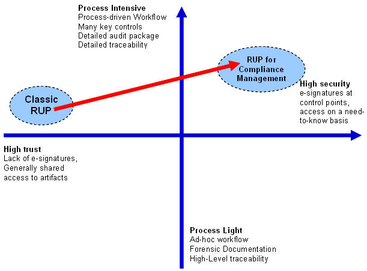

| Roadmap: Process Controls Applied to RUP |
 |
|
Table of ContentsIntroductionA key aspect of achieving Compliant status is to create confidence that internal and external policies, regulations, and standards are being implemented within the development process, and across its work products. In practice, Typical Compliance Concerns and Common Compliance Challenges can be addressed by providing legitimate evidence of their implementation to an impartial third party, also known as an auditor. A process where such evidence is produced, maintained, and readily available is designated as "auditable". This roadmap identifies a set of process control enhancements that strengthen the auditability of the IBM Rational Unified Process (RUP) methodology. These controls help provide two fundamental compliance related benefits:
Executive SummaryEffective Compliance Management can be achieved by demonstrating the implementation of IT Controls in an organization. The appropriate scope of these controls is an organization-specific decision. RUP for Compliance Management demonstrates the addition of fundamental IT Process Controls to the RUP methodology. Their primary purpose is to help extend the applicability of RUP processes from high-trust environments to environments where enhanced security, auditability, and process control are required:  The additions we made to the RUP process to enhance control are as follows:
This roadmap outlines how the above controls are implemented here and can be used to enhance general auditability of the RUP process. A separate add-on roadmap introduces additions to this roadmap for the auditable implementation of Application Controls. These controls may need to be further enhanced to meet the standards set up for a specific development process. Process enhancementsCompliance Management work productsThe work products described below have been added to RUP to support auditable process control. These work products have been designed as sub-artifacts of existing RUP artifacts whose purpose is to:
There are two categories of compliance management work products. process work products, which describe compliance aspects of the process being followed, and project data, which describes project-specific data created as a result of executing the process. Process work productsThis roadmap assumes that the process has already been enhanced to address the content of these work products. They are:
Control Point Specification: This new sub-artifact of the
Change Workflow Specification: This sub-artifact of the
Process Validation Plan is a sub artifact of the Note that these process work products have been separately identified for audit and approval purposes:
Project dataThe following work products must be developed or revised with each project. They are: Record Control Specification lists all the work products identified as records, as well as how they are produced, stored, and managed. It may be modified, because certain records prescribed by the process may not be applicable in a particular implementation. While the record types specified in the process will not change, the ones produced for a particular project and their contents may require customization. Distribution Policy defines the policy for distributing deliverables to QA or to Deployment. It describes the exit criteria and procedures to be satisfied for the release to be authorized. It is the responsibility of the Release Manager. Work Product Approval: Approvals are key to a disciplined, auditable process. An approval is a formal record of one or more work products being signed off as acceptable. Many approvals are defined within the RUP methodology today as a step within a task. In RUP for Compliance Management, we specify approvals as separate work products to underline their importance. Each one is defined as the outcome of a new task, which makes it possible to specify the approver (role responsible for the task), the work product approved (input to the task), and to attach a checklist to the task to enumerate approval criteria. Work products subject to approval are designated as controlled work products. Project Archive provides a baseline of all relevant project artifacts, both for audit purposes and for future use. It must include all Controlled Work Products produced, as well as all of the deliverables and artifacts that might be needed for maintenance. Key rolesRole-based separation of duties is a fundamental tenet of the compliance domain. Its foundation is that development, review, approval, and use of artifacts cannot be carried out by the same individual, as otherwise the impartiality of the process can be called into question. RUP roles have thus been expanded and refined based on the RACI Model (Responsible, Accountable, Consulted, Informed) to support this principle in the development of work products. Compliance Management expands and refines RUP roles in part because of the new work products introduced, but also to address separation of duties in compliance-sensitive areas. Compliance Management rolesRelease Manager: Defines the Distribution Policy. This role is responsible for collating the released work products from multiple sub-projects, and for producing a release that can be delivered into the production environment. This role owns the release management process, and has authority for the overall process results. Finally, The release manager is responsible for the quality of the process of assembling the release, and for ensuring that all criteria specified in the Distribution Policy were met. Compliance related rolesThese roles are roles involved in normal software development whose responsibilities have been expanded to include compliance related activities. Technical Lead: A senior designer or implementer for a subsystem or component. This role has both technical and some managerial responsibilities, including:
Note: This plug-in introduces this role specifically to address approvals. This role will eventually be moved into the base RUP methodology to deal with larger team structures where work assignment and status reporting is delegated through technical leads.
Compliance Management practicesWork Product controlThis control identifies which work products must be approved, and contains an auditable workflow demonstrating how Approvals can effectively be reached:
RUP for Compliance Management addresses Work Product control in the following ways:
Record ControlRecords are write-once, read-only work products that can be created by a specific role only. This control determines what records will be created (including approval records), and how they will be managed. This plug-in supports Record Control by:
TraceabilityIn the most highly-regulated situations, Traceability can take on a life of its own and encompass the bulk of the work products produced by the process. Here, we have kept it to the (minimum) level of maintaining traceability between change requests and associated tests (see Implementing Auditable traceability with Tools). To formalize this control, change requests, tests, and test logs have been designated as Controlled Work Products. Formally gated process (Control Points)Control Points are formal process gates (or milestones) that require a certain number of conditions to be achieved, and at which the health of the project can be assessed. Control Points were implemented as a special kind of approval that addresses the health of the project in its area of focus, instead of assessing the quality of specific work product(s). Defining points of control is very much organization- and situation-dependent, and determining which ones to include may be project-dependent. In general, we recommend considering making all major process milestones control points. We have not done so here, but have focused instead on managing builds and creating releases, where control is most likely to prevent costly errors. The "Three Points of Control" approach defines a controlled process for producing builds and delivering software. It embodies good Release Management Practices akin to The Release Management Workflow from IBM's Tivoli Unified Process. This approach builds in quality gates, defines clear lines of responsibility, and enforces Separation of Duties by clearly delineating development, build management, and deployment activities. The Three Points of Control are:
A formal RUP-based processThe RUP methodology is a comprehensive, formally specified software development process. Its integration with other Rational tools (such as Rational Portfolio Manager) makes it possible to export relevant aspects of the method, thus supporting process automation and tool-directed behavior. Tool Directed Behavior is highly dependent on the capabilities of the tools selected. Because an entirely manual process is error prone and often prohibitively expensive, Tool Directed Behavior is indispensable to make the process manageable. How much is implemented depends on an organization's budget for tools and its need for automation. The tools presented below are the ones used in RUP for Compliance Management. Rational Method Composer allows customers either to tailor the RUP methodology or to capture their own processes in a manageable, configurable, and publishable standard structure. This structure is an implementation of the Unified Method Architecture (UMA) based on the Object Management Group (OMG) standard SPEM2. RequisitePro supports the ability to initiate a Compliance Enhancement Project by capturing compliance requirements with appropriate levels of traceability and control. ClearQuest provides the ability to deliver an auditable change by supporting management and control of software assets through workflow automation. Automated workflow management can help enforce processes, audit trails, traceability, electronic signatures, and reporting, all of which allow organizations to document authorizations and signoffs at key stages in the lifecycle. ClearCase provides the ability to deliver an auditable change by supporting management and control of software assets through version control, audit trails and traceability, user authentication, baselines, and reporting. Tivoli Configuration Manager helps automate, streamline, and accelerate the software build and deploy process. Rational Portfolio Manager helps business executives and IT leadership align IT investments with business goals. It helps project teams efficiently plan and execute projects. It also provides a collaborative workflow environment for project and asset management, insight into resource capacity planning, and oversight of project financials. Software development processThis roadmap describes how the above controls are integrated into the RUP methodology, but it does not address changing the process substantially. While compliance management does involve making changes to IT processes, significant method changes must be avoided while the process is being used. This is due to the confusion and methodological irregularities that mixing process changes and process usage may often cause. The only acceptable process adjustments are project-specific customizations already covered in the RUP platform with the development case. The process outlined below focuses on using RUP with enhanced auditability as provided by the plug-in. To further simplify this roadmap, the topic covering how to handle compliance requirements was also moved to a supplemental roadmap, to be used as an add-on to this one. The typical lifecycle supported by this roadmap involves two major releases or distributions: One for beta testing, which occurs at the end of construction, and one for final release, which occurs at the end of transition. Inception Phase tasksDuring the Inception Phase, the Process Engineer works alongside the Change Manager to ensure that the development process includes the right controls, as required by corporate policy. The Compliance Analyst refines the compliance management requirements (and their traceability), while the Project Manager works to ensure that these requirements are introduced in the planning activities. When a compliance enhancement project starts, the following has already happened:
Therefore, these tasks are mainly intended to adapt the existing organizational process (this plug-in focuses on the RUP platform) to the tools and specifics of the project at hand, and to verify that the result is satisfactory. The tasks incorporated into the standard RUP Inception Phase include:
At the end of this phase, the following objectives should have been met:
Elaboration Phase tasksDuring the Elaboration Phase, the Architect begins to work on the critical scenarios that will have an impact on the architecture. The Implementer translates the design specification into the software product. The Tester defines tests to validate that changes introduced in this phase are working successfully. The standard RUP Elaboration tasks are applied in this phase. The context is that the requirements driving the architecture (being designed and implemented) are related to compliance requirements. The additional tasks incorporated into the standard RUP Elaboration phase are predominantly related to approving artifacts:
At the end of this phase, all requirements should be stable, any architectural concerns should be resolved, and the chosen approach to introducing IT Process Controls should be proven in both the application and within the process. Construction Phase tasksDuring the Construction Phase, the Implementer continues to add functionality into the software product or application. The Tester executes tests to validate that the functionality introduced in this phase is working successfully. The standard RUP Construction tasks are applied in this phase. The context is that the requirements being designed and implemented are related to compliance management.
The same review and approval tasks performed in the elaboration phase ( Towards the end of this phase, the Distribute Software Release hands off the entire release to QA for System Testing. At the end of this phase, all requirements have been fully explored and the development of the system is complete based upon the baselined architecture. The release is ready for beta testing in preparation for final release into the production environment. Transition Phase tasksThe focus of the Transition Phase is to ensure that the software application is available for its end users. It includes testing the product in preparation for release, and making minor adjustments based on user feedback. The key aspects for compliance are the final build of the application, acceptance testing, and the controlled transition into release management and production. The standard RUP Transition tasks are applied in this phase. The context is that the requirements being designed and implemented are related to compliance management.
Final review and approval tasks performed in the previous phases ( In addition, the following final approval and distribution tasks are preformed during this phase. They are:
At the end of this phase the project is complete and has been released into the production environment. |